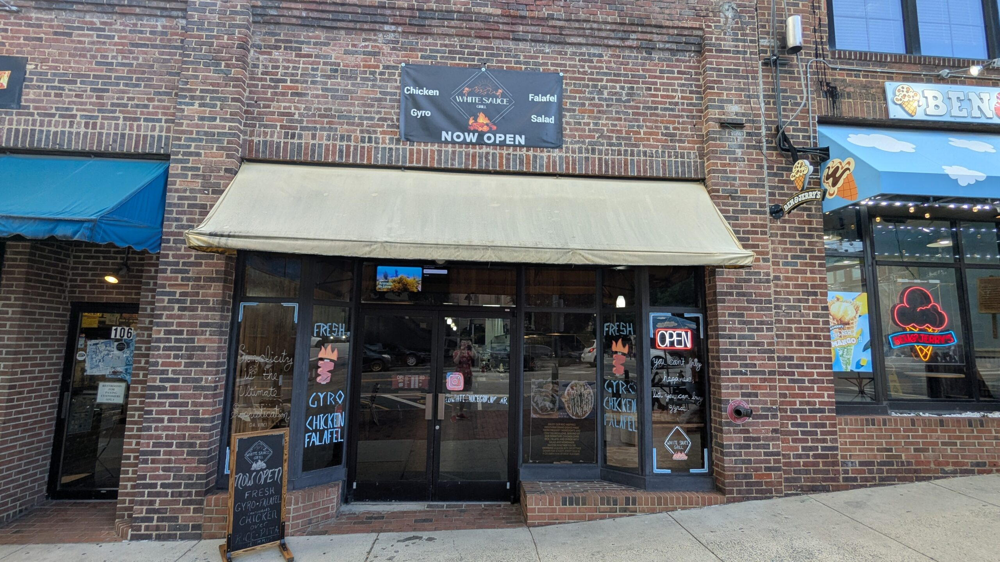

White Sauce
Mediterranean Grill in Chapel Hill, NC

Our Story
White Sauce brings NYC-style halal plates to Chapel Hill. Enjoy chicken, gyro, and falafel over rice, pita, or fries with our signature sauces.
HOURS OF OPERATION
Monday – Saturday: 11:30 AM – 10:00 PM
Sunday: 11:30 AM – 8:00 PM
PHONE
(919) 240-4865